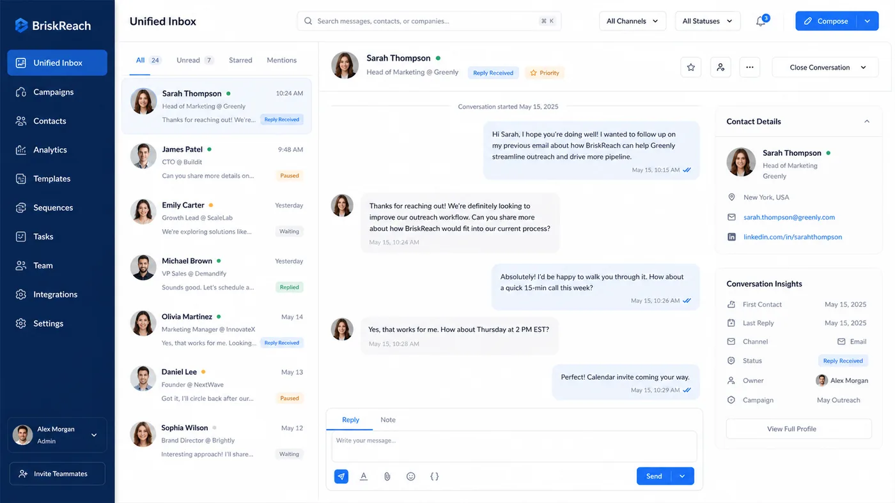

BriskReach Review 2026: What Makes This LinkedIn Outreach Tool Different From the Others

Every few months a new LinkedIn outreach tool appears with a cleaner interface, a lower price, and a promise that it will not get your account banned. After looking at enough of these tools to know the pattern, I started asking a different question: what actually separates the ones that work from the ones that look good in a screenshot?
BriskReach is a LinkedIn outreach and CRM platform built around two operating modes. You can run outreach through your own LinkedIn account, or you can hire a BriskReach Rep, which is a real human contractor who runs outreach from their own LinkedIn profile. Most tools in this category offer one of those two things. BriskReach offers both in the same dashboard.
I spent time looking at how it works, what the safety systems look like in practice, and how the pricing compares to what you actually get.
The Problem With Most LinkedIn Outreach Tools
The tools that dominate this market were built for power users. They have configuration panels, custom webhook setups, Zapier integrations, and pricing tiers that require a sales call to understand. For a solo founder or a small sales team that just wants to send LinkedIn messages without getting their account restricted, all of that is noise.
The second problem is pricing opacity. A tool can show a low starting price and hide the per-seat cost, the per-recipient cost, or the "connector fee" that appears on your third invoice. By the time you realize what the tool actually costs, you have already migrated your data and your team is trained on it.
The third problem is safety. LinkedIn restricts accounts for behavior that looks automated. Most tools handle this by adding random delays and hoping for the best. That is not a safety system. That is a gamble with your account on the table.
BriskReach was built for people who want outreach that actually works without having to configure a dozen settings to make it safe.
Two Modes, One Dashboard
The core split is between running your own LinkedIn account through BriskReach or hiring a BriskReach Rep. Most tools make you choose one or the other.
Bring Your Own LinkedIn Account
If you already have a LinkedIn account with connections and a network built up, you can connect it to BriskReach through Unipile hosted auth. You import leads, create campaigns, and manage your inbox inside BriskReach. Messages go out from your account, which means the account age, connection count, and posting history all work in your favour.
This is the right mode for anyone who already has an established LinkedIn presence and wants to put it to work for outreach without switching platforms.
Hire a BriskReach Rep
A BriskReach Rep is a contracted human profile. Not an AI-generated identity. Not a shared team account. A real person with a real LinkedIn profile who runs outreach on your behalf.
The setup is included in the $129 per Rep per month. Identity setup, provisioning, and the 14-day delivery SLA all come in that price. If a Rep is not live and sending within fourteen days, you get a refund. That is the kind of line that most tools in this space would rather not write in plain English.
This is the right mode for anyone who does not have the time or account infrastructure to run outreach themselves, or who wants to run outbound campaigns without risking their own LinkedIn account.
Safety Engine: What Actually Protects Your Account
BriskReach has what they call a Safety Engine. Most tools describe their safety approach in one line. BriskReach breaks it into six configurable controls.
Working hours. You set the window when messages go out. Outside that window, nothing sends. This means your outreach looks like normal business activity to LinkedIn rather than a pattern that runs around the clock.
Timezone controls. Messages are sent during the working hours of the recipient, not your local time. This means higher open rates and a lower probability of LinkedIn flagging the activity as machine-generated.
Random delay between messages. 30 seconds to 4 minutes of jitter built in. This means messages do not go out at exact intervals, which is the fastest way to trigger a restriction.
Warmup curve. New accounts do not send at full volume immediately. The system ramps up gradually, which means your LinkedIn account age and behaviour patterns grow alongside your outreach volume rather than being exposed to LinkedIn's detection systems before they are ready.
Daily caps. You set the maximum messages sent per day. This is per-account and per-campaign. If you are running outreach from your own LinkedIn account, you control the cap. If you are working with a Rep, the cap is managed centrally.
Reply-aware pause. This is the detail that most tools skip. When someone replies to your message, the automation stops for that conversation. Your reply goes out manually, which means no more auto-generated responses to people who are already talking to you. It also means the campaign does not keep sending follow-ups to people who have already responded.
Pricing Transparency
BriskReach publishes its pricing on the site without requiring a sales call.
- Starter: $39 per seat per month. One LinkedIn seat, lead import, reply-aware pause, full safety engine access.
- Additional seat: $20 per seat per month. Each extra seat shares the same inbox and safety settings.
- Reps: $129 per Rep per month. Identity setup, 14-day delivery SLA, and refund if the Rep is not live on time.
There is a seven-day free trial. No credit card required to start. Trial workspaces are capped at one LinkedIn account, 50 leads, one active campaign, and 10 messages per day. Once you go paid, the caps come off and the full platform is available.
The pricing page also has a direct comparison table against Aimfox, Dripify, Expandi, and HeyReach, which is useful if you are evaluating multiple tools at the same time.
What the Platform Actually Looks Like
The dashboard has five main areas.
Campaigns. Create outreach campaigns, select target leads, set safety parameters, and track progress. Campaign status is visible at a glance: pending, running, finished, or failed. Lead health counts tell you how many leads are waiting, how many are being reached, and how many replies have come in.
Inbox. Replies land here. When a lead responds, their status flips to replied and the automation pauses for that conversation. You reply from inside BriskReach or from your email, whichever you prefer. The conversation history stays in one place.
Leads. Import and manage your target list. Filter by status, search by name or company, and track where each lead is in the campaign. CSV import is supported. Mobile view shows card rows instead of a wide table, which makes it usable on a phone.
Analytics. A "What needs attention" panel flags unread replies, failed actions, accounts without a sender, leads without a campaign, and campaigns with no leads. The rest of the analytics view shows your standard outreach metrics in a clean layout.
Accounts. Connect and manage LinkedIn accounts. Each account shows its current status, the timezone and working hours configuration, and the daily send cap.
How It Compares to Aimfox, Expandi, Dripify, and HeyReach
BriskReach is not the cheapest tool in this category and it is not trying to be. Its position is different: transparent pricing, two operating modes in one platform, and safety controls that are configurable rather than hard-coded.
The four comparison pages on briskreach.com go into detail on each competitor. The short version is that most tools in this category offer BYO LinkedIn only, have opaque pricing that requires a discovery call, and bundle safety into a generic delay setting rather than a configurable engine.
BriskReach Reps is the differentiator that most competitors cannot match without rebuilding their entire model. Real human outreach from contracted profiles with an SLA is a fundamentally different offering than a SaaS tool that lets you run your own account.
What You Get With the Free Trial
Seven days is enough to connect your LinkedIn account, import a lead list, run one campaign, and see how the inbox handles replies. That is the entire product, not a feature-limited version of it.
The trial caps are low, which is fair. If you have never used the platform before, 50 leads and 10 messages per day for 7 days is enough to evaluate whether the workflow fits your process. When you upgrade, the workspace is preserved and the campaign continues.
Who BriskReach Is For
BriskReach is built for B2B companies that need LinkedIn outreach at a scale that justifies more than a manual process, but without the overhead of a full enterprise sales tool.
It works well for SaaS founders running their own outbound, sales teams that need a shared inbox and campaign tracking, and agencies that run outreach for multiple clients and need account separation and team visibility.
The Reps model is specifically useful for companies that do not have LinkedIn accounts with enough history to send safely at volume, or that want to run outbound campaigns without risking an existing account that has years of relationship history on it.
Where to Start
If you are evaluating LinkedIn outreach tools, the comparison pages at briskreach.com/compare are the most useful starting point. They have direct comparisons against Aimfox, Dripify, Expandi, and HeyReach with feature-by-feature breakdowns.
If you want to skip the comparison and go straight to the product, start a seat trial at briskreach.com. The trial does not require a credit card. You connect your LinkedIn account, import your first lead list, and run your first campaign within the first session.
You can find BriskReach at briskreach.com.